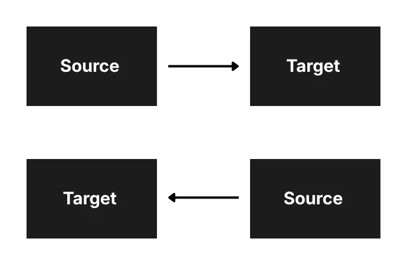
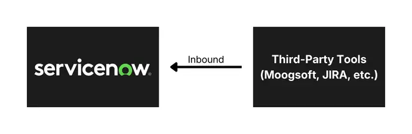
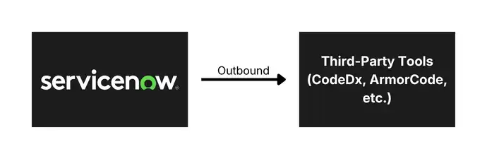
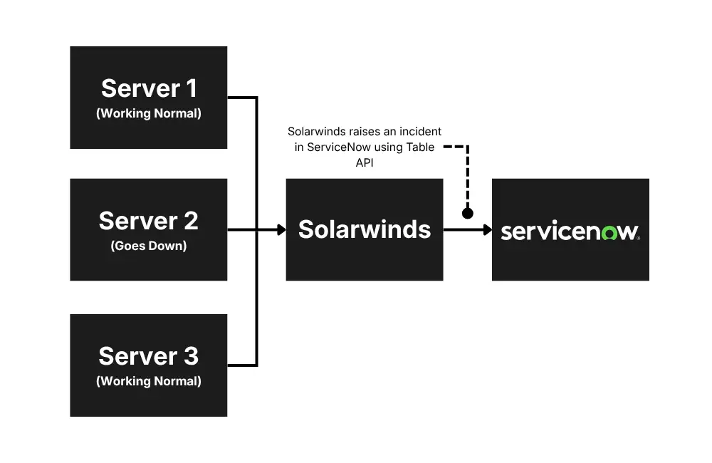
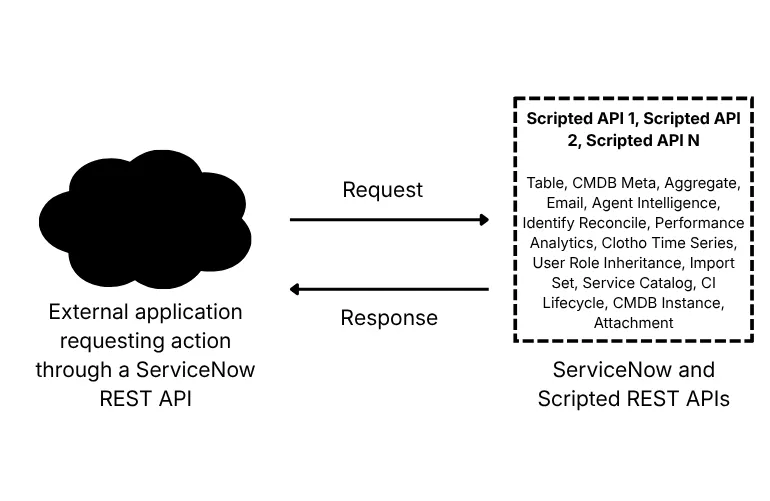
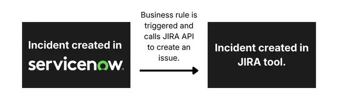
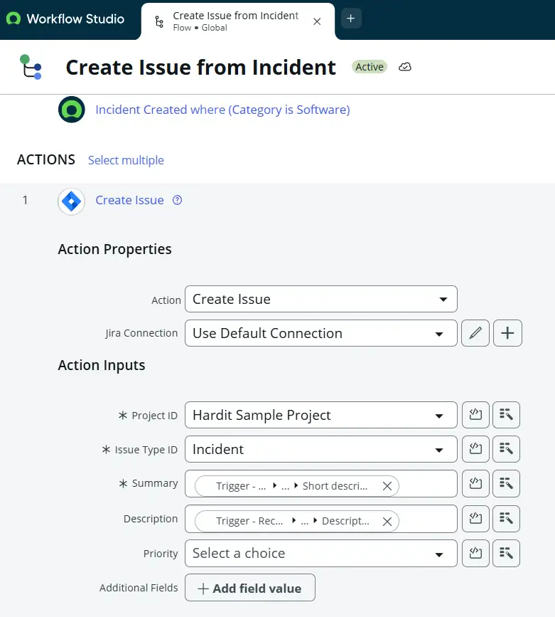
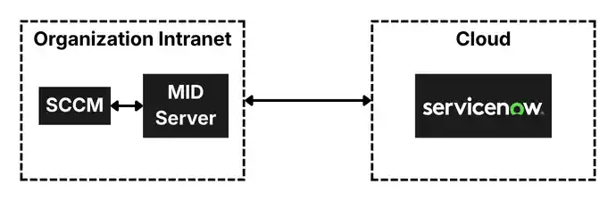

There are plenty of IT tools or platforms that are experts in their own domains. These tools store relevant data, personal data, system data, or metadata, and they will be storing data in databases for an organization. For small-scale to large-scale companies, it becomes important to share this data among these tools so that they do not store the same at multiple places and make decisions on one tool depending on the data from other tools.
Let’s talk about integrations in ServiceNow. Integrations allow ServiceNow to communicate with other systems, enabling organizations to automate workflows, share data between platforms, and create seamless digital processes. Instead of manually copying information between systems, integrations allow data to flow automatically.
In this article, we will explore what integrations mean in ServiceNow, how they are implemented, their benefits, and best practices for building reliable integrations.
What Is an Integration?
In simple terms, it’s when two tools or platforms talk to each other and exchange data.
One is the Source, which provides the data, and the Target receives the data.
There are two scenarios:
1. One-Way Integration (Uni-directional Integration)
In this setup, data flows in only one direction. One system acts as the sender, while the other functions solely as the receiver, without sending any data back.
2. Two-Way Integration (Bi-directional Integration)
This refers to a setup where data flows back and forth between two systems. Each system can send, receive, and utilize data from the other, enabling seamless and continuous exchange of information.

Integrations in ServiceNow
Since this article is about Integrations in ServiceNow, let’s discuss that. It refers to the ability of ServiceNow to connect and exchange data with external systems or applications. This allows different platforms to work together as part of a unified workflow.
In other words, integration allows ServiceNow to talk to other systems automatically.
This communication can involve:
- Receiving data from another system (inbound integration).
- Sending data to another system (outbound integration).
- Triggering actions in another application.
Inbound Integration
When there is a request incoming in ServiceNow from some other third-party tool to fetch data from ServiceNow, it will be an inbound integration. The third-party tools like Moogsoft, Jira, and Armorcode can retrieve data from ServiceNow’s tables like Incident, Change, and more.
Example: Jira wants to fetch the latest updates on an incident ticket, like the state of the incident or the latest work notes. This will be an inbound request to ServiceNow.

Outbound Integration
It refers to scenarios when ServiceNow initiates the request to retrieve, insert, or update data from a third-party tool. In such cases, integration is classified as outbound integration.
Example: When an Incident is created in ServiceNow, we want to create the same incident in Jira. In this case, we can send an outbound request to Jira from ServiceNow and create that incident.

How Other Tools Integrate With ServiceNow (Inbound Integration)
ServiceNow natively provides multiple ways so that other tools can access data in ServiceNow. These integrations help automate workflows, exchange data across systems, and enable organizations to build connected digital processes.
1. REST APIs
ServiceNow exposes comprehensive REST and SOAP APIs for every table and functionality in the platform. These APIs allow external systems to read, create, update, and delete ServiceNow records directly into tables programmatically.
Example: The Table API, Attachment API, Aggregate API, Import Set API, and Scripted REST APIs form the backbone of inbound integration patterns.
Table API includes API for all the tables like Incident, Change or Problem, and third-party tools can use the Table APIs to directly read/create/update/delete records in these tables.
In a couple of my projects, we had exposed the Incident table API to multiple third-party monitoring tools, so that they can create incidents in our ServiceNow instance automatically. One of the tools where we exposed the Incident API was SolarWinds. The SolarWinds tool monitors the performance and availability of the servers in real time, and if the server goes down or its CPU utilization goes above 90%, it automatically raises an incident in ServiceNow.
This is how TABLE API looks like: https://dev12345.service-now.com/api/now/table/incident

2. Scripted REST API
The Scripted REST API feature in ServiceNow lets developers create their own custom APIs. Think of Table APIs as a basic tool that can only do simple actions like adding, reading, changing, or deleting data from one table at a time.
But with Scripted REST APIs, you can write your own rules and logic to do almost anything you want. You’re not limited to one table or simple operations – you can combine data, apply conditions, perform calculations, or follow custom steps, and then make all of that available for other tools to use through an API. It’s like upgrading from a simple remote control to a fully programmable one that can handle complex tasks.
Example: Let’s say an external tool wants to know how many high‑priority incidents are currently open in ServiceNow.
- A Table API would require the tool to pull all incidents and then filter them itself.
- But with a Scripted REST API, you can write the logic inside ServiceNow to:
- Check the Incident table
- Count only open, high‑priority tickets
- Add a message like “Critical issues found”
- Send back just the final number
So instead of sending lots of raw data, ServiceNow sends back something clean and ready to use, like:
{
"high_priority_open_incidents": 5,
"message": "Critical issues found"
}
The third-party tool gets exactly what it needs, no extra work required.

How ServiceNow Integrates With Other Tools (Outbound Integration)
Outbound integration means ServiceNow is the one sending information or making a request to another system to do CRUD operations. We can use one of the following ways to integrate ServiceNow with other tools, depending on the situation and use case.
1. Outbound REST Messages
ServiceNow can call another tool’s REST API to send or fetch data. This is the easiest and most common way to integrate with third-party tools. In this case, a third party’s technical team provides us with their REST API, and then we call that API in ServiceNow from Business Rules or Flow Designer, and then we can do CRUD operations in the tool from ServiceNow.
Example: I have worked on multiple projects of ServiceNow-Jira integration long back, and on the creation of an incident in ServiceNow, we would create an issue in Jira and also assign it to a developer. In this case, the Jira team provides us with an API to create issues in their system. In ServiceNow, we can use Business Rules or Flow Designer to call that API whenever a new incident is created in ServiceNow, and then that API creates an issue in Jira.
This is how Jira API looks like: https://your-site-name.atlassian.net/rest/api/3/issue/

2. Outbound SOAP APIs
SOAP integrations work similarly to REST integrations, but they use an older web service standard called SOAP (Simple Object Access Protocol). While modern applications mostly prefer REST because it’s simpler and more flexible, many legacy or traditional enterprise systems still rely on SOAP.
These older systems often cannot be upgraded easily, so SOAP remains the only supported method for exchanging data. ServiceNow can consume these SOAP web services by sending XML‑based messages and receiving structured responses.
Example: Suppose an organization uses an old HR system that was built many years ago and only supports SOAP communication. When ServiceNow needs to send employee details, such as a new hire record or an update about a role change, it sends the data using a SOAP message to the HR system. The HR system then processes the XML message and updates its internal database accordingly.
3. Integration Hub
IntegrationHub is ServiceNow’s powerful integration framework that allows ServiceNow to connect with external applications without requiring heavy custom scripting. It provides prebuilt connectors, known as spokes, which contain ready‑to‑use actions designed to simplify communication with popular third‑party platforms.
These spokes act like plug‑and‑play building blocks – developers and process owners can drag and drop these actions into flows within Flow Designer, making integrations faster, cleaner, and easier to maintain. Because they come with preconfigured authentication, inputs, and outputs, spokes significantly reduce the amount of technical effort required to build and maintain integrations.
Common applications with out‑of‑the‑box spokes include:
- Microsoft Teams
- Slack
- Jira
- Azure
- Workday
ServiceNow uses these prebuilt actions to send data out, trigger actions in external systems, or even orchestrate multi‑step workflows involving several tools at once.
Example: When I implemented ServiceNow-Jira integration in the past, before the integration hub was introduced, I used to do tons of scripting to write down the logic. After the introduction of Integration Hub, I simply use actions (spokes) given in Flow Designer by ServiceNow and create tickets in Jira without even writing a single line of code.
Right now, I just do the following steps:
- Activate Jira spoke in ServiceNow.
- Set up a connection with Jira.
- Create a new Flow Designer to trigger the Jira integration when an incident is created.
- Use the actions (spokes) provided by ServiceNow to create an issue in Jira.

4. MID Server Integration (ServiceNow to On-Premises Device)
A MID Server (Management, Instrumentation, and Discovery Server) is a small application installed inside a company’s private network, which can be installed on a Windows or Linux Server. It acts as a secure bridge between ServiceNow (which is cloud‑based) and on-premises systems that are not accessible from the internet because of firewall restrictions. For example, internal servers, databases, network devices, or any tool running in the company’s data center.
Because these internal systems are protected behind firewalls and cannot be exposed externally, ServiceNow cannot connect to them directly. This is where the MID Server becomes extremely important. It works like a “trusted messenger” inside the private network:
- ServiceNow connects to the MID Server.
- The MID Server processes those requests inside the network.
- MID Server fetches details of servers inside the organization’s network.
- It safely returns the required information to ServiceNow.
All communication is encrypted and secure.
Why Is a MID Server Needed?
- Internal systems are behind firewalls
- Company policy prohibits direct cloud access
- Integration requires local network connectivity
The MID Server solves all of this by being installed inside the same network, allowing ServiceNow to talk to systems it otherwise couldn’t reach.
Example: Let’s say there is a physical server running inside your company’s local office network. ServiceNow needs to update the CMDB (Configuration Management Database) in ServiceNow with the server’s latest information, such as CPU usage, installed software, or memory upgrades.
Here’s how it works:
- ServiceNow sends a request: “Get me the latest details about Server‑01.”
- MID Server receives the request locally because it lives inside the company network.
- The MID Server connects to the on‑prem server (using SSH, WMI, APIs, or agents) and gathers necessary details.
- The MID Server sends the data back to ServiceNow over a secure channel.
- ServiceNow updates the CMDB record with the fresh information.
This ensures that ServiceNow gets accurate, real-time data from internal systems without exposing them to the internet.

Authentication and Security
Security is a foundational requirement for enterprise integrations. ServiceNow supports multiple authentication mechanisms to ensure that integration connections are both secure and manageable.
| Authentication Type | Use Case | Notes |
| Basic Auth | Simple internal integrations. | Use only over HTTPS. Avoid for production. |
| OAuth 2.0 | Modern REST API integrations. | Recommended; supports token refresh. |
| API Key | Lightweight external APIs. | Store securely in the credential store. |
ServiceNow’s Credential Store provides a centralized, encrypted repository for managing integration credentials. All credentials should be stored in the Credential Store rather than hardcoded in scripts, enabling centralized rotation and audit trails. Network access controls through the MID Server add an additional layer of perimeter security for on-premises integrations.
Integration Best Practices
Successful ServiceNow integrations require more than technical connectivity. The following best practices help organizations build integrations that are reliable, maintainable, and scalable over time.
Design Principles
- Design for idempotency: integrations should produce the same result if executed multiple times with the same input.
- Use asynchronous patterns for high-volume or long-running operations to avoid blocking the main thread.
- Implement circuit breakers to prevent cascading failures when downstream systems are unavailable.
- Prefer event-driven integration over polling wherever possible to reduce latency and system load.
- Document every integration thoroughly, including data flow diagrams and field mappings.
Error Handling
- Always implement robust error handling in scripts and flow actions.
- Log integration errors to a dedicated integration log table for monitoring and auditing.
- Create automated alerts for integration failures so issues are detected proactively.
- Implement retry logic with exponential backoff for transient failures.
- Design error recovery workflows so failed records can be reprocessed without manual intervention.
Performance and Scalability
- Use Import Sets for bulk data synchronization rather than processing records individually.
- Implement pagination for API calls that return large datasets.
- Schedule batch integrations during off-peak hours to minimize platform impact.
- Monitor MID Server performance and scale horizontally as integration volume grows.
- Use ServiceNow’s Integration Health dashboard to track throughput and error rates.
Governance
- Maintain an integration registry documenting all active integrations, owners, and dependencies.
- Apply change management processes to integration modifications.
- Conduct regular integration audits to identify unused or under-performing connections.
- Define clear data ownership and stewardship responsibilities for integrated data.
- Test integrations in a non-production instance before promoting changes to production.
Final Thoughts
ServiceNow integrations are a strategic investment that extends the value of the platform far beyond what any single application can deliver in isolation. By connecting ServiceNow to the broader enterprise technology landscape, organizations unlock end-to-end workflow automation, unified operational visibility, and the ability to respond to events across the business in real time.
Whether leveraging the low-code simplicity of IntegrationHub spokes, the power of custom REST APIs, or the flexibility of the MID Server for on-premises connectivity, ServiceNow provides the tools needed to build integrations that are secure, reliable, and maintainable at enterprise scale.
The most successful integration programs treat connectivity as a discipline that is governed, documented, monitored, and continuously improved. Organizations that adopt this mindset will find that ServiceNow becomes the connective tissue of their digital operations, enabling the kind of automated, intelligent workflows that define modern enterprise performance.